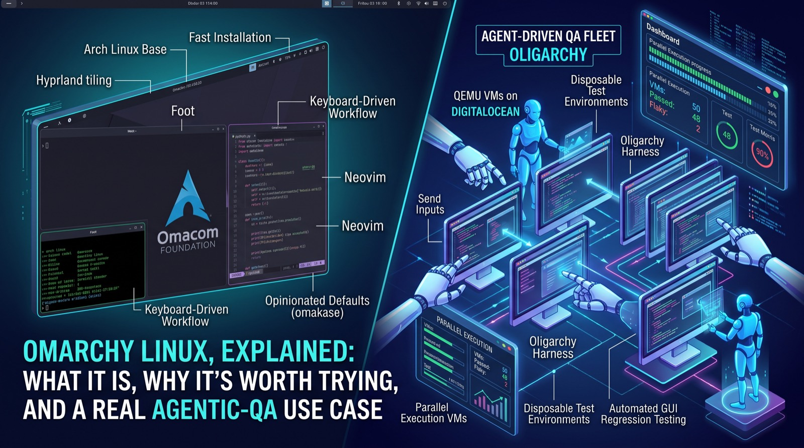

Omarchy Linux, Explained: What It Is, Why It's Worth Trying, and a Real Agentic-QA Use Case
What Omarchy Linux actually is, why developers and testers like it, and how its own release process uses fleets of AI agents in VMs as a QA pattern worth stealing.
Setting up a new Linux box for development usually means an hour or two of picking a window manager, a terminal, a theme, and fighting driver quirks before you write a line of code. Omarchy is a distribution built specifically to remove that tax, and along the way its own team has built one of the more concrete public examples of agent-driven QA running at scale — which makes it worth a look even if you have no plans to switch your daily driver.

What Omarchy actually is
Omarchy is an opinionated Linux setup built on Arch Linux and the Hyprland tiling window manager, created by David Heinemeier Hansson (DHH), the creator of Ruby on Rails, with the Omacom Foundation backing ongoing development. The name borrows from "omakase" — chef's choice — and the philosophy is the same: instead of asking you to choose a window manager, terminal, editor, and forty other things before you can be productive, it ships with defaults already picked (Hyprland for tiling, Foot as the default terminal, Neovim as the default editor), while still letting you swap any of them for alternatives like Alacritty, Ghostty, Kitty, VSCode, Zed, or Sublime Text. Installation is genuinely fast: write the ISO to a USB drive, answer a handful of setup questions, and you have a working desktop in a few minutes rather than a few hours. The most recent major release, nicknamed Quattro, rebuilt the interface on a component called Quickshell, which unifies the status bar, app launcher, notifications, lock screen, and system menus into one coherent piece instead of several loosely glued-together utilities — reviewers have called it the most polished version of the distro so far.
Why developers and testers tend to like it
The appeal for a technical user isn't the desktop wallpaper — it's that a keyboard-driven, tiling workflow is genuinely fast once you've climbed the learning curve, and Omarchy removes most of the setup friction that normally stands between "installed Arch" and "actually productive." Two details matter specifically if you're evaluating it as a workstation for testing work rather than just daily development. First, it defaults to the Btrfs filesystem with Snapper and Limine handling boot-time snapshots, so you can take a snapshot before installing a new package, plugin, or theme and roll straight back if it breaks something — a real property for anyone who wants a machine they can experiment on and reliably reset to a known-good state, which is exactly what a disposable test environment needs. Second, Omarchy ships with native, system-wide AI agent integration for tasks like debugging a crash, writing a plugin, or generating a custom theme from the terminal — which is table stakes now, but it's implemented deeply enough that it shaped the distro's own approach to quality assurance, described below.
A concrete use case for testing: Omarchy's own QA harness
The most directly relevant thing for a QA audience isn't a feature you'd install — it's how the Omarchy team tests Omarchy itself. In September 2026, ThePrimeagen (a well-known developer and streamer) joined Omarchy Core specifically to lead what the project calls Agentic QA, built around a harness nicknamed Oligarchy. The pattern is straightforward and worth stealing regardless of whether you ever touch this distro: Oligarchy boots a fresh copy of Omarchy inside a QEMU virtual machine from a newly provisioned disk image, then lets AI agents operate it the way a person would — sending keystrokes, moving and clicking the mouse, taking screenshots, and checking that the result matches what was expected. Because it runs on cloud infrastructure (DigitalOcean droplets), the team can run a fleet of these agents in parallel across the installer flow, system updates, keybindings, and menus, on top of the reality that Omarchy has to support wildly different hardware targets — standard x86 machines, Apple silicon, Snapdragon laptops, Nvidia GPUs, and Raspberry Pi boards. Manually clicking through that matrix before every release isn't realistic for a small team; a swarm of agents each starting from a clean image and reporting what they saw is.
That combination — a disposable, identical starting state every run, agents that interact at the input/screenshot level instead of through a fragile internal API, and horizontal scale across many parallel VMs — is a pattern that applies well beyond one Linux distro. It's the same shape of solution a team would reach for to regression-test a desktop app across OS versions, or to smoke-test an installer across hardware configurations, without hand-maintaining a UI automation script for every combination.
Pitfalls and limits
None of this makes Omarchy a safe default choice for a QA lab or production workstation without real evaluation. The tiling, keyboard-first interface is a genuine adjustment coming from Windows or macOS — no dock, no start menu, and an empty desktop that's disorienting before you've learned the keybindings. As an Arch-based rolling release, it inherits Arch's occasional post-update instability, which is exactly why the snapshot setup matters — skip it, and you lose the main safety net. It's also a small, opinionated project rather than an enterprise Linux distribution, so hardware certification and community documentation are thinner than Ubuntu or Fedora offer. And giving any system-wide AI agent the ability to run terminal commands and rewrite configs is convenient, but carries the same broad-tool-access tradeoff as any computer-use agent — worth scoping deliberately before it touches a machine holding test credentials or real data. Finally, Oligarchy itself is young; the team describes it as moving from "a fun experiment" to a routine part of the release process, so treat it as an instructive pattern rather than a turnkey tool.
What to do next
Try Omarchy inside a VM first, the way its own QA harness does, before considering bare metal — QEMU or VirtualBox is enough to feel out the tiling workflow with nothing at stake. If you do install it for real, choose Btrfs at setup and confirm Snapper is taking snapshots before you install anything new, so you always have a clean rollback point for a disposable test session. Read the Oligarchy announcement as a design reference even if you never run Omarchy: the fresh-image-per-run-plus-input-level-agent-plus-fleet-parallelism pattern is directly adaptable to testing your own GUI-heavy application. And if you turn on Omarchy's system AI agent, decide up front what it's allowed to touch before you use that machine for anything involving real credentials or data.
Sources
Podešavanje novog Linux računara za razvoj obično znači sat-dva biranja window managera, terminala i teme, uz borbu sa hirovima drajvera, prije nego što napišete ijednu liniju koda. Omarchy je distribucija napravljena upravo da ukloni taj "porez", a usput je njen tim napravio jedan od konkretnijih javnih primjera QA-ja vođenog agentima koji radi u većem obimu — zbog čega vrijedi pogledati i ako ne planirate da promijenite sistem koji svakodnevno koristite.
![Ilustracija podijeljena na dva dijela: lijevo Omarchy desktop sa Hyprland prozorima raspoređenim u pločice, Foot terminalom i Neovim-om, uz oznake za Arch Linux osnovu, brzu instalaciju, rad vođen tastaturom i unaprijed izabrana podešavanja; desno Oligarchy flota za QA vođen agentima, sa robotskim agentima koji upravljaju mnoštvom paralelnih QEMU virtuelnih mašina na DigitalOcean-u, tablom sa prošlim i nestabilnim testovima i oznakama za jednokratna testna okruženja i automatizovano GUI regresiono testiranje](../../assets/blog/omarchy-linux-agentic-qa.jpg)
Šta je zapravo Omarchy
Omarchy je Linux okruženje sa jasno izabranim podešavanjima, zasnovano na Arch Linuxu i Hyprland tiling window manageru. Napravio ga je David Heinemeier Hansson (DHH), tvorac Ruby on Rails-a, a dalji razvoj podržava Omacom Foundation. Ime je izvedeno od "omakase" — izbor kuvara — i filozofija je ista: umjesto da vas tjera da izaberete window manager, terminal, editor i još četrdeset stvari prije nego što postanete produktivni, dolazi sa već izabranim podrazumijevanim podešavanjima (Hyprland za pločice, Foot kao podrazumijevani terminal, Neovim kao podrazumijevani editor), a i dalje vam dozvoljava da bilo šta od toga zamijenite alternativama kao što su Alacritty, Ghostty, Kitty, VSCode, Zed ili Sublime Text. Instalacija je zaista brza: zapišete ISO na USB, odgovorite na nekoliko pitanja i za par minuta, a ne par sati, imate desktop koji radi. Najnovije veliko izdanje, nazvano Quattro, preradilo je interfejs na komponenti Quickshell, koja objedinjuje statusnu traku, pokretač aplikacija, obavještenja, zaključani ekran i sistemske menije u jednu cjelinu, umjesto nekoliko labavo spojenih alata — recenzenti su ga nazvali najdotjeranijom verzijom ove distribucije do sada.
Zašto ga developeri i testeri vole
Tehničkom korisniku privlačna nije pozadina desktopa — nego to što je rad sa pločicama vođen tastaturom zaista brz kad savladate početnu krivu učenja, a Omarchy uklanja većinu trenja pri podešavanju koje obično stoji između "instalirao sam Arch" i "zaista sam produktivan". Dva detalja su posebno bitna ako ga procjenjujete kao radnu stanicu za testiranje, a ne samo za svakodnevni razvoj. Prvo, podrazumijevano koristi Btrfs fajl sistem, a Snapper i Limine se brinu o snimcima stanja (snapshotima) dostupnim pri pokretanju, pa možete napraviti snapshot prije instalacije novog paketa, plugina ili teme i odmah se vratiti ako nešto pokvari — stvarna prednost za svakoga ko želi mašinu na kojoj može da eksperimentiše i pouzdano je vrati u poznato ispravno stanje, a to je upravo ono što treba jednokratnom testnom okruženju. Drugo, Omarchy dolazi sa ugrađenom, sistemskom integracijom AI agenta za zadatke kao što su otklanjanje uzroka pada, pisanje plugina ili generisanje prilagođene teme iz terminala — što je danas standard, ali je implementirano dovoljno duboko da je oblikovalo i pristup same distribucije osiguranju kvaliteta, opisan u nastavku.
Konkretan primjer za testiranje: Omarchy-jev sopstveni QA sistem
Ono što je za QA publiku najbitnije nije funkcija koju biste instalirali — nego način na koji Omarchy tim testira sam Omarchy. U septembru 2026. ThePrimeagen (poznati developer i streamer) pridružio se Omarchy Core timu upravo da bi vodio ono što projekat zove Agentic QA, izgrađeno oko sistema za testiranje (harness) nazvanog Oligarchy. Obrazac je jednostavan i vrijedi ga preuzeti bez obzira na to da li ćete ikad dotaći ovu distribuciju: Oligarchy pokreće svježu kopiju Omarchy-ja unutar QEMU virtuelne mašine sa novo pripremljenog disk imidža, a zatim pušta AI agente da njome upravljaju kao što bi to radila osoba — šalju pritiske tastera, pomjeraju miš i klikću, prave snimke ekrana i provjeravaju da li se rezultat poklapa sa očekivanim. Pošto radi na cloud infrastrukturi (DigitalOcean droplet-i), tim može paralelno pokrenuti flotu ovih agenata kroz tok instalacije, sistemska ažuriranja, prečice na tastaturi i menije — a uz to Omarchy mora da podrži veoma različite hardverske platforme: standardne x86 mašine, Apple silicon, Snapdragon laptopove, Nvidia grafičke karte i Raspberry Pi ploče. Ručno prolaženje kroz tu matricu prije svakog izdanja nije realno za mali tim; roj agenata od kojih svaki kreće od čistog imidža i prijavljuje šta je vidio — jeste.
Ta kombinacija — jednokratno, identično početno stanje pri svakom pokretanju, agenti koji rade na nivou ulaza i snimaka ekrana umjesto preko krhkog internog API-ja, i horizontalno skaliranje na mnogo paralelnih virtuelnih mašina — obrazac je koji se primjenjuje daleko izvan jedne Linux distribucije. To je isti oblik rješenja za kojim bi tim posegnuo da regresiono testira desktop aplikaciju na više verzija operativnog sistema ili da uradi smoke test instalera na različitim hardverskim konfiguracijama, bez ručnog održavanja skripte za UI automatizaciju za svaku kombinaciju.
Zamke i ograničenja
Ništa od ovoga ne čini Omarchy sigurnim podrazumijevanim izborom za QA laboratoriju ili produkcionu radnu stanicu bez ozbiljne procjene. Interfejs sa pločicama, vođen prvenstveno tastaturom, zahtijeva stvarno privikavanje ako dolazite sa Windowsa ili macOS-a — nema docka, nema start menija, a prazan desktop zbunjuje dok ne naučite prečice. Kao rolling release distribucija zasnovana na Archu, nasljeđuje i Arch-ovu povremenu nestabilnost nakon ažuriranja, i upravo zato su snapshoti bitni — ako ih preskočite, gubite glavnu sigurnosnu mrežu. To je i mali projekat sa jasno izraženim stavovima, a ne enterprise Linux distribucija, pa su sertifikacija hardvera i dokumentacija zajednice tanji nego kod Ubuntua ili Fedore. Davanje bilo kom sistemskom AI agentu mogućnosti da pokreće terminal komande i prepravlja konfiguracije jeste zgodno, ali nosi isti kompromis širokog pristupa alatima kao i svaki agent za upravljanje računarom — vrijedi ga promišljeno ograničiti prije nego što dotakne mašinu na kojoj su testni kredencijali ili stvarni podaci. Na kraju, sam Oligarchy je mlad; tim ga opisuje kao nešto što prelazi iz "zabavnog eksperimenta" u redovan dio procesa izdavanja, pa ga posmatrajte kao poučan obrazac, a ne kao gotov alat.
Šta dalje
Prvo isprobajte Omarchy u virtuelnoj mašini, kao što to radi i njegov QA sistem, prije nego što razmislite o instalaciji direktno na hardver — QEMU ili VirtualBox su dovoljni da osjetite rad sa pločicama bez ikakvog rizika. Ako ga zaista instalirate, pri podešavanju izaberite Btrfs i potvrdite da Snapper pravi snapshote prije nego što instalirate bilo šta novo, kako biste uvijek imali čistu tačku za vraćanje za jednokratnu testnu sesiju. Pročitajte najavu Oligarchy-ja kao referencu za dizajn, čak i ako nikad ne pokrenete Omarchy: obrazac "svjež imidž za svako pokretanje + agent na nivou ulaza + paralelna flota" direktno je primjenjiv na testiranje vaše sopstvene aplikacije sa bogatim grafičkim interfejsom. I ako uključite Omarchy-jevog sistemskog AI agenta, unaprijed odlučite šta smije da dira prije nego što tu mašinu koristite za bilo šta što uključuje stvarne kredencijale ili podatke.